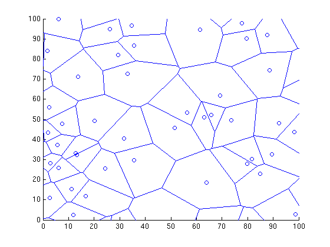

%drawVoronoi : dessine une tesselation de Voronoi typique % % % --------- % % author : David Legland % INRA - TPV URPOI - BIA IMASTE % created the 15/08/2005.
% size of window window = [0 100 0 100]; % guard area bounds = window + [-20 20 -20 20]; % points density lambda = .005;
% number of points Np = round((bounds(2)-bounds(1))*(bounds(4)-bounds(3)) * lambda); % points coordinate x = rand(Np, 1)*(bounds(2)-bounds(1)) + bounds(1); y = rand(Np, 1)*(bounds(4)-bounds(3)) + bounds(3); points = [x y]; % compute Voronoi diagram [vx vy] = voronoi(x, y); % transform into edge format edges = [vx(1,:)' vy(1,:)' vx(2,:)' vy(2,:)'];
% create figure figure(1); clf; axis(window);hold on; % draw diagram drawEdge(edges); drawPoint(points, 'bo');